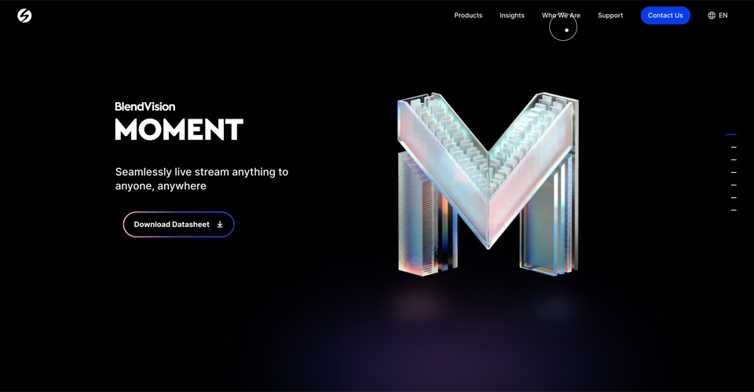
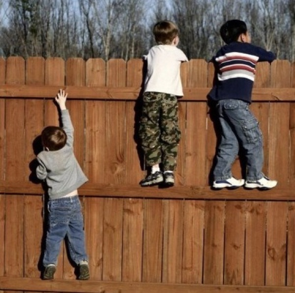
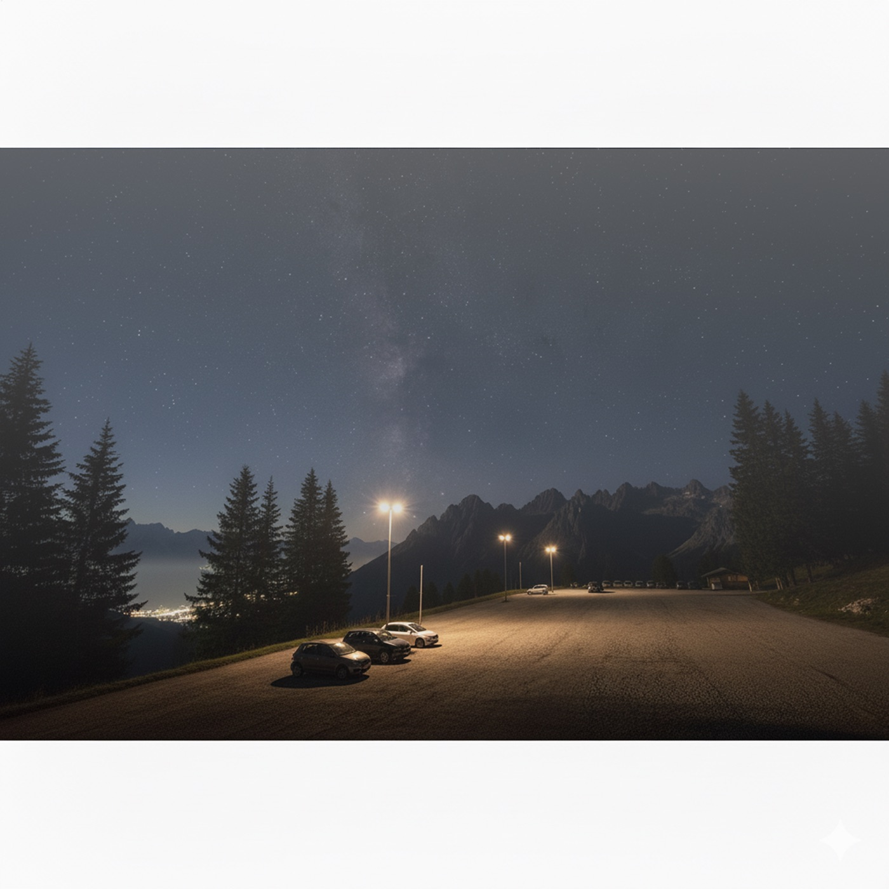

2026.11.18 · 國立成功大學 工業設計系
設計思考
讓 AI 成為你的超能力
LujuIBM Consulting · Experience Design
AI 搭建中 0%
Rundown
今天想和大家分享這些事
- 01
設計思考
先把問題想清楚，分組動手練習
- 02
專案實戰
設計思考在業界實際長什麼樣子
- 03
AI 提升個人效率
AI 怎麼幫我把事情做得更快
- 04
串起整個團隊
從自己變快，到大家一起變快
- 中場休息・10 分鐘
- 05
AI 時代的設計師
AI 什麼都能做，設計師還能做什麼
- 06
SkillsBuild & Bob
免費學習平台與 AI 工具（Careena）
- Q&A
Warm-up · 暖場
拿出手機，
掃描加入互動
先用它回答兩個問題
Q&A · 隨時提問
有問題，
隨時丟到 Slido
不用等到最後，想到就問。
也可以幫別人的問題按讚，票數高的先回答
存成 assets/img/slido-qr.png

About me
Luju
IBM Consulting · Experience Design Team
Senior Experience Design Consultant
- 復興商工美工科 → 輔大應用美術系（視傳組）
- 10 年設計經驗：網頁／APP 體驗設計、設計系統、設計工作坊
- 近期專案：企業網銀、私人銀行
My path
我一路都在學「怎麼做」
- 復興美工學畫畫想當藝術家
- Design Agency 設計公司網頁設計師鑽研 UI 介面設計
- Design Agency 設計公司設計主管帶團隊做專案
- IBM Consulting 顧問公司Senior Experience Design Consultant研究、規劃、工作坊

Until AI
直到 AI 出現，
我只需要決定「做什麼」
動手的部分交給 AI，人的價值在判斷
01
設計思考：
先把問題想清楚
先動手，再說道理
Warm-up 1 · 拿出紙筆
請設計
一個鬧鐘
畫在紙上，不用畫得好看
你畫的是不是這些？
大部分人都在畫「鬧鐘」這個物品
Warm-up 2 · 換個題目
請設計一個
幸福的喚醒方式
一樣畫在紙上，想想你最想怎麼被叫醒
這次大家畫了什麼？
咖啡香、陽光、家人、寵物⋯⋯
已經不是鬧鐘了
同一件事，換一個問法
A · Product-driven
設計一個鬧鐘
以「產品」為起點，
答案大多長得差不多
B · User-centered
設計一個幸福的
喚醒方式
以「使用者」為起點，
解法一下子變多了
設計思考是：
一張便利貼？
還是，一大堆便利貼？
- 答案以使用者為中心，思考解決方案
“
設計思考是一個以人為本的創新方法，
整合人的需求、科技的可能性，
以及商業成功的需求。
Tim Brown · IDEO
從「人」開始，在交集找答案

Think
最左邊這個小男孩，
需要的是什麼？
直覺答案：一把梯子。真的嗎？
往根本需求想，解法會更多
↗ Why往上問背後的需求↓ How往下想具體的解法
民眾反應
「停車場入口太暗，找不到停車場」
如果你是公路局局長，你會怎麼做？

局長：「太暗？那我給你一盞路燈！」
結果：天文迷抗議光害，銀河都看不見了
路燈裝上沒多久就被拆除（2016 年）
民眾半夜來武嶺停車，想做什麼？
「問題 → 解法」太快了
直線式的思考，容易錯過問題背後真正的需求
直線思考
一條路走到底
先定義問題
問題想清楚，路就變多
Tool · 換個問法
How Might We
我們可以如何……？
- How相信有方法
- Might答案不只一種
- We大家一起想
How Might We
換個問法，問題就不一樣
01 · Problem
早八總是
爬不起來
02 · How might we
我們可以如何讓
「起床」不再那麼痛苦？
Method · 5 Why
連問 5 次「為什麼」，找到真正的需求
- 問題早八總是爬不起來
- Why 1為什麼爬不起來？前一晚太晚睡
- Why 2為什麼太晚睡？睡前一直滑手機，停不下來
- Why 3為什麼停不下來？想多放鬆一下才甘願睡
- Why 4為什麼要放鬆那麼久？一整天下來，只有這時候是自己的
- Why 5為什麼只有這時候？白天都在配合課表和別人的安排
怎麼問
- 拿上一個答案再問每一次都接著前一句問「為什麼？」
- 答案寫事實或感受不要寫成解法，例如「買一個更大聲的鬧鐘」
- 問到「人」就可以停出現感受或動機就能停，不必剛好 5 次
How Might We · 找對層次
從哪一層寫 HMW？
只想到一個做法我們可以如何讓鬧鐘更大聲？
答案只剩一個接 Why 1・太晚睡我們可以如何讓人更願意早點上床？
接 Why 3・想多放鬆一下我們可以如何讓人不靠滑手機也能放鬆？
接 Why 5・都在配合別人我們可以如何讓大學生的生活更自由？
太大，不知道從哪想好的 HMW：窄到能馬上開始想，寬到留得下好幾種解法。
延伸工具 · 寫 HMW 卡住時
換個角度，HMW 就寫得出來
情境早八總是爬不起來 → 挑一個角度，接在「我們可以如何⋯⋯」後面
01增加好的部分
例讓起床後，馬上有一件值得期待的事？
02減去不好的部分
例減少離開被窩那一刻的痛苦？
03把負面轉成機會
例把「賴床的五分鐘」變成慢慢清醒的時間？
04挑戰理所當然
例讓鬧鐘不再是唯一的起床方式？
05增加自主感
例讓人自己決定怎麼被叫醒？
06改變發生的時機
例讓早上的手忙腳亂，前一晚就先處理掉？
07照顧不同需求
例讓淺眠的人和叫不醒的人，各有適合的起床方式？
08借用其他情境
例讓起床像玩遊戲一樣，有破關的成就感？
Practice · 分組討論
分組用 HMW
改寫一個問題
全班同一題作業總是拖到截止前一晚才開始做
- 黃色：每人寫一次自己拖到最後一晚的經驗
- 綠色：選一個，一起用 5 Why 往上問
- 藍色：挑剛剛好的一層，寫成「我們可以如何⋯⋯？」
便利貼這樣貼
卡住時，換個角度
放大好的・減少壞的・負面變機會・挑戰理所當然
增加自主・換個時機・照顧不同人・借用情境
參考思路
同一題，可以這樣想
題目作業總是拖到截止前一晚才開始做
挖到的原因想不出要做什麼
→寫成 HMW我們可以如何讓想法更快定下來？
挖到的原因只在腦中想，沒有動手試
→寫成 HMW我們可以如何讓第一步小到馬上能動手？
挖到的原因怕做得不完美被否定
→寫成 HMW我們可以如何讓人不怕先交出不完美的第一版？
寫完問自己：想得出一個明天就能試的做法嗎？
02
專案實戰：
一個真的上線的專案
設計思考在業界，實際長什麼樣子？
影片僅於講座現場播放
拆開來看，每一步都有目的
- 01
策略目標工作坊
先確立內部共識與目標
目的：
大家要解的是同一個問題 - 02
使用者研究
聆聽真實使用者的聲音
目的：
找出使用者真正卡住的地方 - 03
設計思考工作坊
對焦問題，創意共創
目的：
多元觀點，產出更多可能 - 04
易用性測試
小步快跑，快速驗證迭代
目的：
用最低成本確認方向對不對
- 01策略目標工作坊
- 02使用者研究
- 03設計思考工作坊
- 04易用性測試
策略目標工作坊
先確立內部共識與目標
目的大家要解的是同一個問題

換成你的作業
動手前，先和組員對齊：這題到底要解決什麼？
- 01策略目標工作坊
- 02使用者研究
- 03設計思考工作坊
- 04易用性測試
使用者研究
聆聽真實使用者的聲音
目的找出使用者真正卡住的地方

換成你的作業
去現場觀察、訪談真的會用的人，不只靠自己想像
- 01策略目標工作坊
- 02使用者研究
- 03設計思考工作坊
- 04易用性測試
設計思考工作坊
對焦問題，創意共創
目的多元觀點，產出更多可能

換成你的作業
組員各自發想，再一起收斂，不急著選第一個點子
- 01策略目標工作坊
- 02使用者研究
- 03設計思考工作坊
- 04易用性測試
易用性測試
小步快跑，快速驗證迭代
目的用最低成本確認方向對不對

換成你的作業
先做粗略的版本給同學試用，看他們在哪裡卡住
Before / After
高雄銀行 App，改版前後
App Store 評分
1.6→3.9★
舊版 458 則・新版 28 則
（2026 年 11 月）
- ★★★★★比舊版好用太多了！
- ★★★★★生日當天，吉祥物端蛋糕說生日快樂，超可愛 😍
- ★★★★★要轉出的帳號也能同步顯示餘額，很清楚
- — App Store 網友評論
Takeaway
每一步，都在確認
我們解的是對的問題
這個循環叫做 The Loop：
觀察、反思、動手做，做完再回去觀察。
Enterprise Design Thinking · The Loop
- Observe觀察使用者研究
- Reflect反思設計思考工作坊
- Make動手做原型＋易用性測試
03
AI 怎麼幫我
把事情做得更快
我也還在摸索，分享四個我現在用 AI 的場景
- 01訪談之後
- 02提案之前
- 03自己做工具
- 04現在
場景 1 · 訪談全部結束之後
5–6 場訪談，
每場 1.5 小時，
錄音全部要整理
以前
要一段一段重聽，邊聽邊抄重點
AI 幫我
整理錄音、找出受訪者的共通點 NotebookLM
我負責
回頭確認，這些重點到底對不對
學到的事AI 省下時間，判斷還是我的
AI 小提醒AI 會一本正經地亂講（幻覺）整理出的洞察，要對照原始逐字稿
- 01訪談之後
- 02提案之前
- 03自己做工具
- 04現在
場景 2 · 提案前卡住的時候
問卷、訪綱、
簡報標題，
怎麼寫都不對
以前
自己一個人反覆改，越改越沒把握
AI 幫我
規劃問卷與訪綱，給我幾個不同的標題用詞 ChatGPT
我負責
選一個方向，再改成自己的話
學到的事AI 給選項，我做決定
AI 小提醒先告訴 AI 目的和對象要達成什麼、找什麼人；再請它檢查有沒有是非題、引導性問題
- 01訪談之後
- 02提案之前
- 03自己做工具
- 04現在
場景 3 · 轉折
整理 Design Kit，
又要再做一次
以前
頻繁要做的事，每次都手動處理
AI 幫我
在 Figma 整理設計系統、寫元件規範，做外掛處理色碼、字級設定 Figma
我負責
想清楚要解決什麼，試用後再修
學到的事遇到麻煩，先想「能不能做個工具解決」
AI 小提醒先把規則想清楚，再交給 AI規則沒想清楚就大量產出，做錯得全部重來
- 01訪談之後
- 02提案之前
- 03自己做工具
- 04現在
場景 3 · 延伸
每天的待辦，
也做成工具
說一句「記一下」，
就排進清單和日曆
11 月・週二待分類 5 件・已連線
右滑今天・左滑延後・上滑做完了・下滑不做
還剩 5 張
今天專心做這些。
今天做0
延後0
- 01訪談之後
- 02提案之前
- 03自己做工具
- 04現在
場景 4 · 現在
工具開始
不只幫到我一個人
以前
設計規範散在各處，每個人的理解都不一樣
AI 幫我
設定 Design Token，把規範變成大家查得到的字典
我負責
和團隊對齊共識，
尤其是用詞
學到的事工具只是開始，
講同一種語言才會一起變快
AI 小提醒AI 可以找出用詞不一致但每個詞的定義，要團隊一起決定
04
跳脫單點優化：
串起整個團隊
自己變快還不夠，卡關的常常是人跟人之間
從我開始
影響力，一圈一圈往外擴
- 我
做小工具，解決自己重複的麻煩事
- 設計團隊
大家共用同一套設計規範
- 跨部門
SA、前端也一起用，一改就同步
Shift
從解決自己的問題，
到解決團隊的問題
Break
休息一下
可以先到 Slido 留下想問的問題
05
AI 什麼都能做，
設計師還能做什麼？
AI 帶來了什麼改變？
AI 的躍進
動手的門檻
一下子變低了
只要敢試，幾乎沒有做不到的事
所以重點變成
不是打造更好的工具，
而是從真正的痛點著手
先問對問題，AI 才幫得上忙
AI 時代，設計師需要的四種能力
- 01
問對問題
好奇心、同理心
- 02
想得夠廣
想像力、開放的態度
- 03
判斷得準
美感與設計基礎
- 04
做得夠快
快速執行與驗證
未來缺的是 T 型人才：視野夠廣，判斷夠深
判斷怎麼練深？
別把大腦
外包給 AI
什麼都問 AI，變聰明的只有 AI。
哪天沒有 AI，你就慌了
享受犯錯、享受失敗，
你的大腦才會跟著進步。
像打遊戲一樣
死了 19 次⋯⋯第 20 次，過關！
還記得鬧鐘嗎？
開場
AI 可以
幫我做什麼？
從工具出發，像在設計一個鬧鐘
現在
我想解決
什麼問題？
從需求出發，像在設計幸福的喚醒方式
最後，送給大家一句話
「你的想像力，就是 AI 的天花板」
讓 AI 動手，你來動腦
- 保持好奇心
- 勇敢嘗試
- 享受犯錯
06
IBM SkillsBuild
& IBM Bob
- IBM 完全免費的數位學習平台
- 22 大主題、超過 1,000 門課程
- 全球逾 2,200 萬人使用，可拿業界認證證書
分享者：Careena
Q&A
謝謝大家，
歡迎提問
Slido 上票數高的問題先回答
存成 assets/img/slido-qr.png